Imagine you are watching a short film of two basketball teams.
One in white shirts, one in black.
Your task is simple: count the number of passes made by the white team.
You are focused, tracking the ball, and ignoring the black shirts. Halfway through the video, a person in a full gorilla suit walks into the center of the court, thumps their chest for nine seconds, and walks off.
When the video ends, I ask you: "Did you see anything unusual?"
Think about it.
Statistically, there is a fifty-percent chance you will say no. You will be absolutely certain there was no gorilla. And when I play the video back for you, you won't just be surprised. You will be shocked at your own blindness.
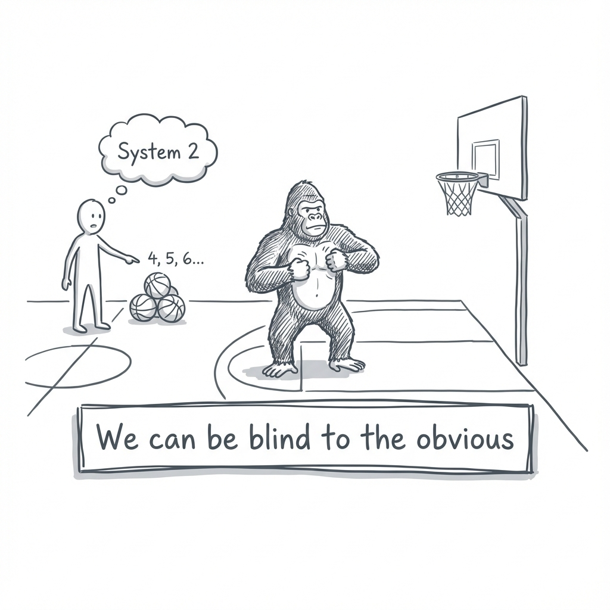
This experiment, famously conducted by Christopher Chabris and Daniel Simons and cited by Daniel Kahneman, reveals a profound truth about how your brain is wired.
We can be blind to the obvious, and we are also blind to our blindness.
The stakes of this blind spot are higher than missing a mascot. They explain why you overestimate your ability to finish a project on time, why you cling to a losing stock, and why entire nations misjudge the risk of a war.
Kahneman spent decades cataloging the patterns of these mistakes.
They have names: anchoring, loss aversion, the planning fallacy. And once you learn them, you start seeing them everywhere.
This longform introduces you to the two characters that run your mind. By the end, you'll know which one to trust, and which one is trying to fool you.
You will discover:
- Why your brain has two pilots, and why the lazy one is usually flying the plane.
- Why the first number you hear in a negotiation secretly controls you.
- Why a plane crash on the news makes you fear flying but ignore the drive home.
- Why we see patterns in randomness and mistake luck for skill.
- Why you always think you'll finish faster than you will.
- Why your memory of a vacation matters more than the vacation itself.
The 1-Minute Summary Your mind runs on two systems: * System 1 is fast, automatic, and intuitive. It jumps to conclusions, sees patterns, and creates stories. * System 2 is slow, effortful, and logical. It can check System 1's work, but it's lazy and often doesn't bother.
This imbalance leads to predictable errors: * Anchoring: The first number you see drags your estimate toward it. * Availability: Vivid events feel more common than they are. * Loss aversion: Losing \$100 hurts twice as much as winning \$100 feels good. * The planning fallacy: You always think you'll finish faster than you will.
Even your memory plays tricks. Your remembering self judges experiences by their peaks and endings, not their duration. This is why a vacation that ends badly feels ruined, even if most of it was wonderful.
The goal isn't to eliminate these biases. It's to recognize the situations where your intuition is likely to fail.
If this breakdown resonates, explore more at longform.online
Module 1: The Characters of the Story
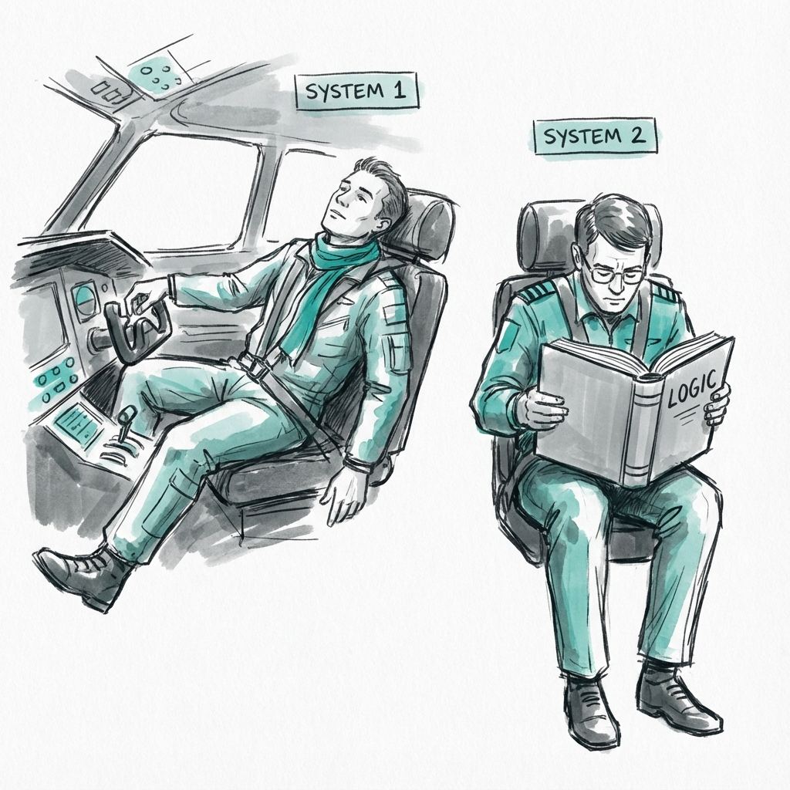
To understand how you think, you have to meet the two characters living in your head.
Daniel Kahneman calls them System 1 and System 2.
They aren't literal physical parts of your brain, but rather useful fictions, a way to describe the distinct modes of thought that compete for control every time you make a choice.
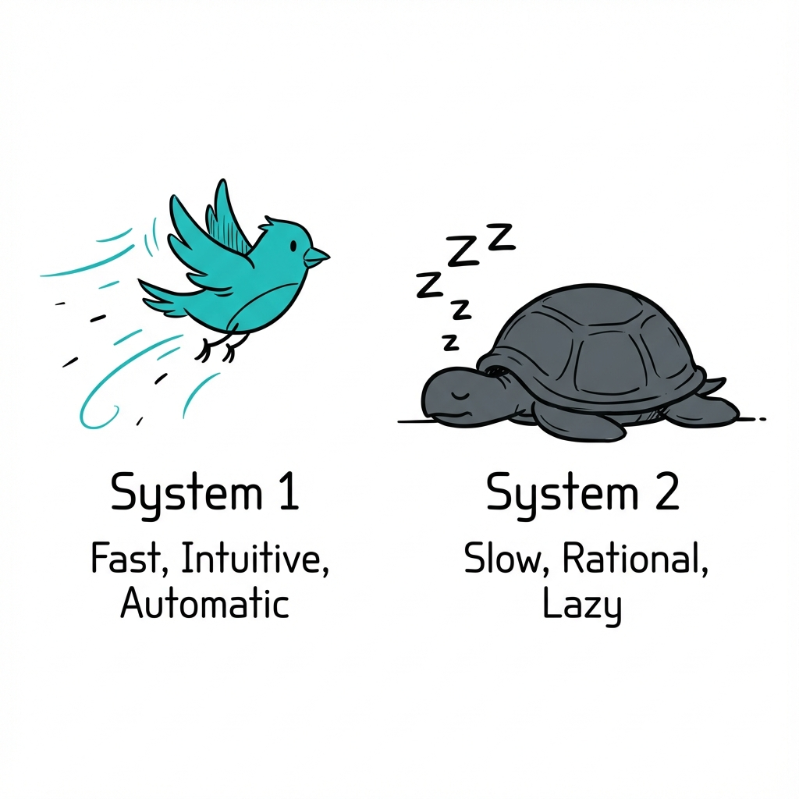
System 1 is the fast part.
It operates automatically and quickly, with little or no effort and no sense of voluntary control. It is the part of you that knows 2 + 2 = 4 the moment you see the numbers. It detects a hint of anger in a spouse's voice before they even finish a sentence. It completes the phrase "bread and..." with "butter" without you even trying.
System 1 is constantly scanning your environment to create a coherent story about what is happening.
1. The Supporting Actor
System 2 is the slow part.
It is the conscious, reasoning self that you identify with, the part that decides what to eat for dinner or how to solve a complex tax form. While System 1 is always running in the background, System 2 is essentially lazy. It allocates attention to effortful mental activities that demand it, but it prefers to let System 1 take the lead.
Think of the difference like this.
If you are asked to solve 17 \times 24, your System 1 can recognize that it is a multiplication problem and perhaps estimate that the answer is somewhere between 200 and 600. But to get the exact answer (408), you must engage System 2.
You feel your pupils dilate, your muscles tense, and your heart rate rise.
This is cognitive effort, and your brain treats it as a limited resource, like a battery that can be drained.
2. The Lazy Controller
A central theme of Kahneman’s work is that System 2 is not as vigilant as we like to think.
It often acts as a lazy controller, endorsing the impressions and feelings generated by System 1 without checking them for accuracy.
This leads to what psychologists call cognitive illusions.
Consider the bat and ball puzzle:
A bat and a ball cost \$1.10. The bat costs \$1.00 more than the ball. How much does the ball cost?
For most people, a number jumps to mind immediately.
It feels right. Intuitive. Obvious.
It's also wrong.
If the ball cost 10 cents, the bat would cost \$1.10, making the total \$1.20. The correct answer is 5 cents.
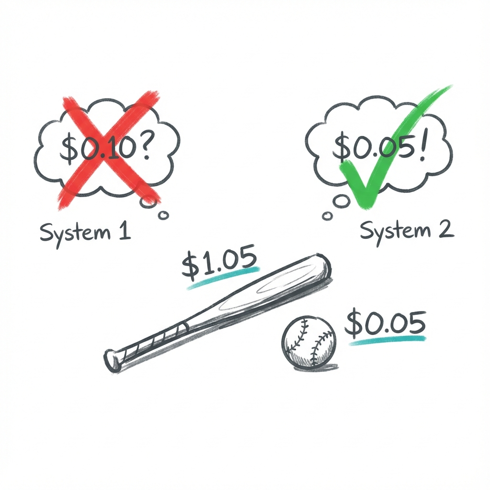
The fact that students at elite universities frequently fail this test shows that high intelligence does not necessarily mean high rationality.
Rationality requires the discipline to question the fast answer.
3. Priming and the Hidden World
Much of System 1’s work happens in total silence, hidden from your conscious mind. This is best demonstrated by the phenomenon of priming.
In one study, participants were asked to assemble sentences from words associated with the elderly, such as "Florida," "forgetful," or "wrinkle." After finishing, they were observed walking down a hallway.
Remarkably, those who had been primed with the "old" words walked significantly slower than those who had not.
They didn't feel old, and they certainly didn't consciously choose to slow down. Their System 1 simply activated a network of ideas associated with aging, and those ideas leaked into their physical actions.
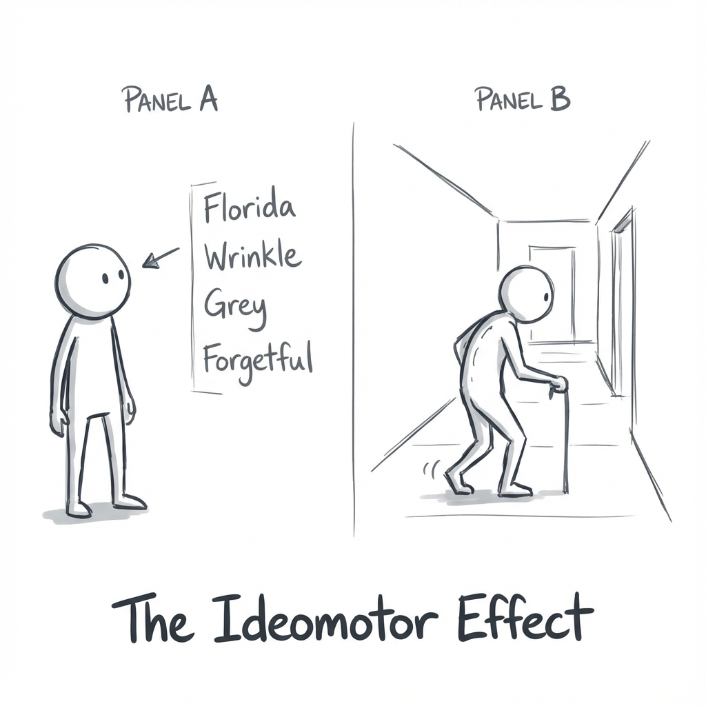
This suggests that we are far more influenced by our environment (the posters on a wall, the background music in a store, the phrasing of a headline) than our conscious selves would ever admit.
The question is: what else is System 1 doing without your permission?
More than you think. System 1 uses a set of mental shortcuts to navigate the world. Most of the time, they work. But sometimes they don't just fail. They fail in ways that can cost you money, relationships, and years of your life.
The first one involves a number you saw five minutes ago.
Module 2: Heuristics and Biases
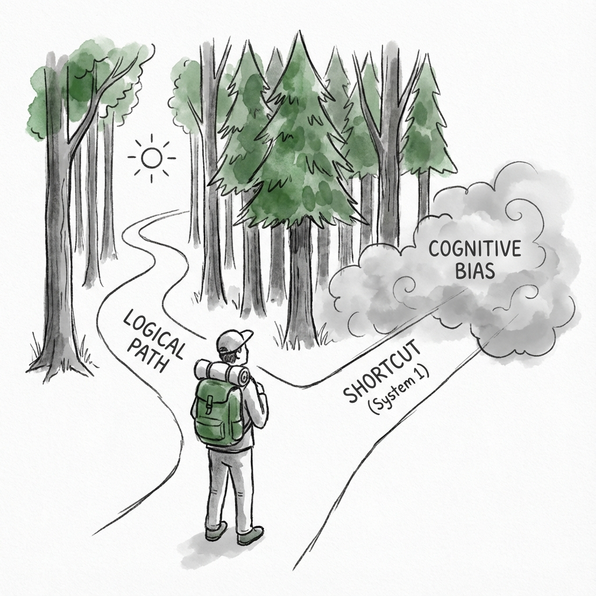
System 1 is a machine for jumping to conclusions.
To navigate a complex world without overheating, it relies on heuristics, simple mental shortcuts that help us make judgments quickly.
If you see a large animal with sharp teeth, you don't need a statistical analysis to know you should run.
But System 1 is automatic. It cannot be turned off.
It applies these shortcuts even when they don't fit, leading to systematic errors known as biases. These aren't random mistakes. They are predictable glitches in our mental software.
1. The Law of Small Numbers
We are pattern seekers.
We crave causality.
If we see a sequence of events, our minds instantly invent a story to explain the link.
The problem is that System 1 is terrible at distinguishing between a causal story and a statistical accident.
Consider a study of kidney cancer incidence in the United States.
The data shows that the counties with the lowest rates of kidney cancer are mostly rural, sparsely populated, and located in traditionally Republican states.
Your System 1 immediately goes to work.
Why? Perhaps the clean air, the fresh food, or the lack of stress contributes to their health. The explanation feels right. It makes sense.
But now consider the counties with the highest rates of kidney cancer.
They are also rural, sparsely populated, and located in traditionally Republican states.
System 1 struggles here. How can the same rural lifestyle cause both high and low cancer rates?
The answer has nothing to do with lifestyle or politics and everything to do with math.
Rural counties have small populations.
The Law of Small Numbers dictates that small samples yield extreme results more often than large samples.
A county with few people is statistically more likely to show unusually high or low rates purely by chance.
But chance is not a satisfying story.
We pay more attention to the content of a message (rural lifestyle) than to the reliability of the information (sample size).
We prefer a coherent causal story over a dry statistical fact.
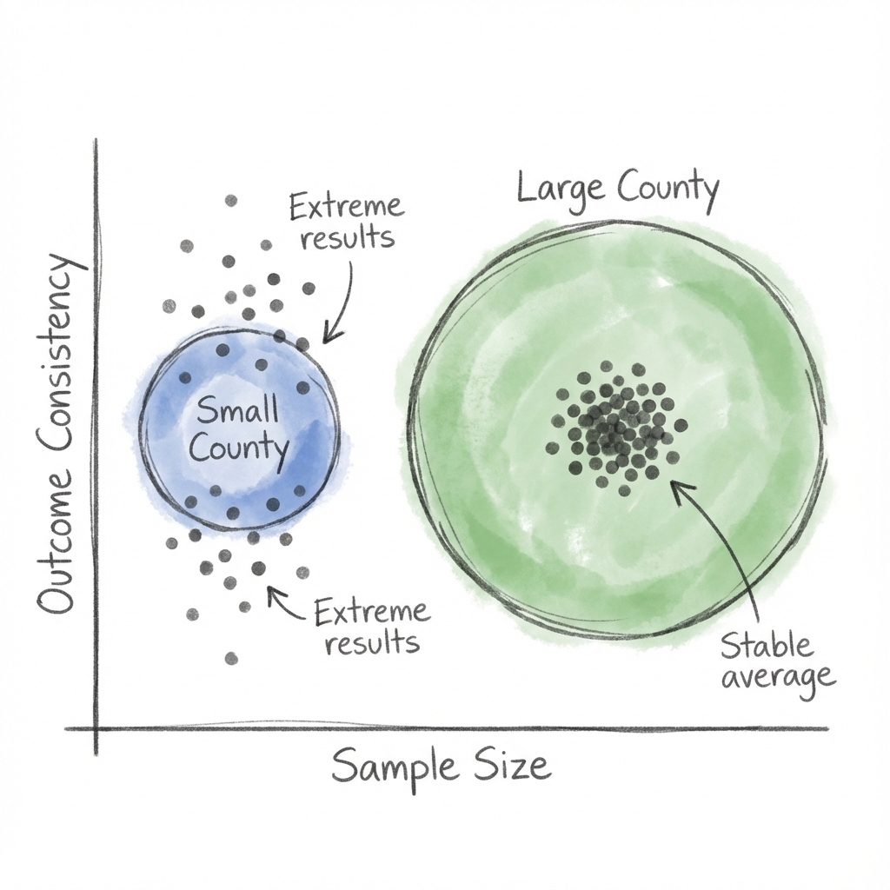
2. Anchors Adrift
When we try to estimate an unknown quantity, we often grab onto a number that is right in front of us. Even if that number is completely irrelevant.
This is the Anchoring Effect.
Kahneman and his colleague Amos Tversky demonstrated this with a rigged wheel of fortune.
They asked students to spin a wheel marked 0 to 100, which was fixed to stop only on 10 or 65.
The students were then asked two questions: 1. Is the percentage of African nations in the UN larger or smaller than the number you just spun? 2. What is your best guess of the percentage of African nations in the UN?
The wheel spin was obviously random. It contained zero information about geopolitics. Yet, the students who spun 10 estimated the percentage at 25%, while those who spun 65 estimated it at 45%.
The anchor acts as a suggestion.
System 1 tries to construct a world in which the anchor is the true number. If the anchor is 10, your mind activates thoughts of low numbers. If 65, it primes high numbers.
This bias is everywhere: in salary negotiations, real estate pricing, and even sentencing in courtrooms. The first number mentioned sets the range. The initial number drags the final judgment toward it, weighing it down like an anchor.
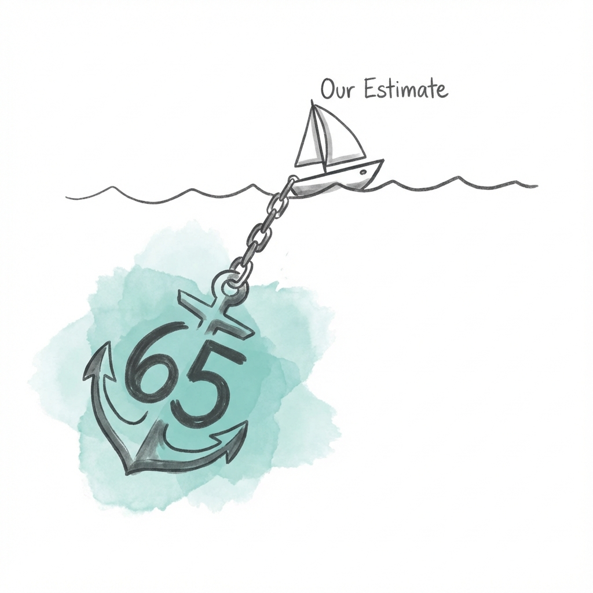
3. The Science of Availability
If you are asked, "Is it more dangerous to fly or drive?" you might intellectually know that driving is riskier.
But if a plane crashed yesterday and was plastered all over the news, your gut feeling says otherwise.
This is the Availability Heuristic.
We judge the frequency or probability of an event by how easily examples come to mind.
System 1 assumes that if instances are easy to retrieve, the category must be large. Usually, this is true. You recall dogs easily because dogs are common.
But retrieval is also influenced by other factors: emotional vividness, recency, and media coverage.
A shark attack is highly available. It's visceral, terrifying, plastered across every news outlet. It feels common because it is vivid.
Conversely, quiet killers like diabetes are less available because they rarely make headlines, leading us to vastly underestimate their danger.
This heuristic affects our personal relationships, too.
In a study where spouses were asked to estimate their personal contribution to household chores, the combined total for most couples exceeded 100%.
Why?
Because a husband can easily remember every time he took out the trash (it's available to him), but he has a harder time recalling when his wife did it.
We are the heroes of our own movies, and our own actions are always the most available.
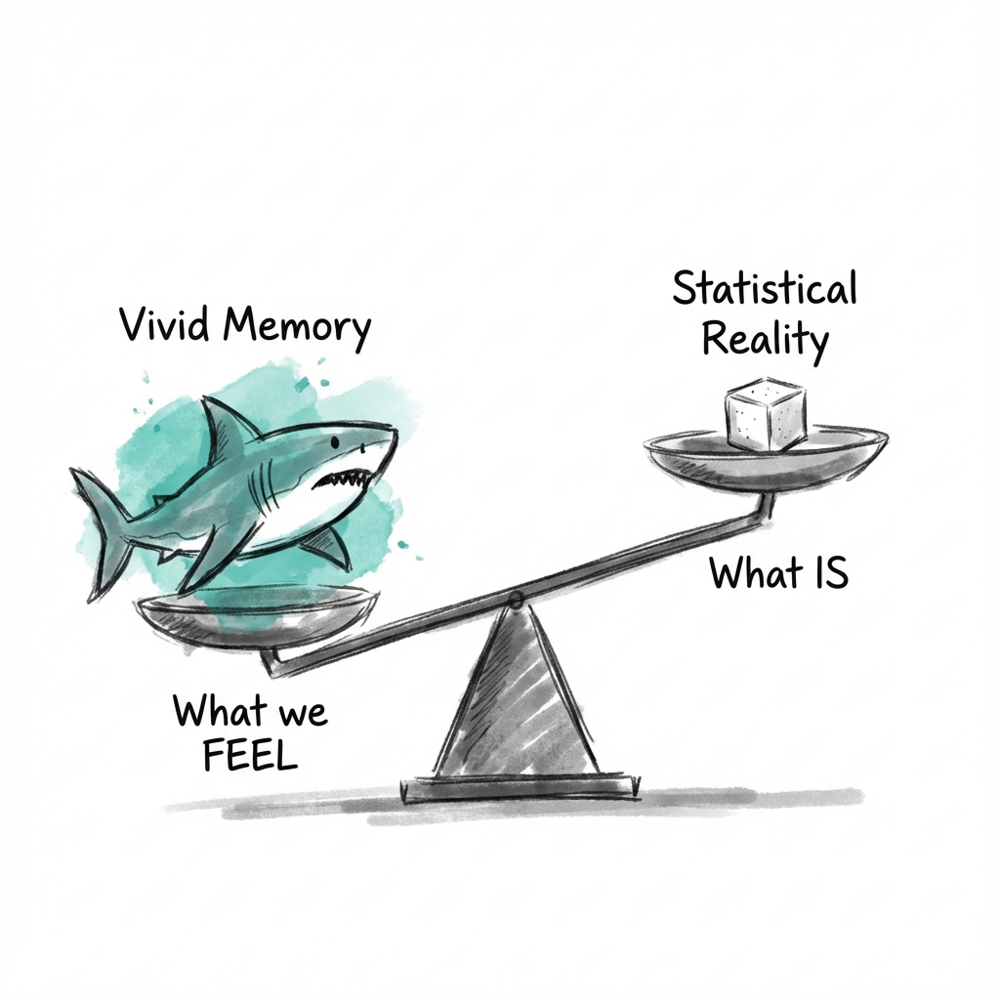
4. Predicting by Stereotype
Meet Tom W. He is of high intelligence, lacking in true creativity. He has a need for order and clarity, and quiet and tidy writing. His writing is rather dull and mechanical, though occasionally enlivened by somewhat corny puns. He has a deep feeling for others but lacks the ability to interact with others.
Is Tom more likely to be a student of computer science or of humanities?
Most people instantly say computer science.
Tom fits the stereotype (or the representativeness) of a computer scientist perfectly.
But in making this judgment, we ignore a crucial piece of information: The base rate.
There are vastly more humanities students than computer science students.
Even if Tom fits the computer science profile, it is statistically more probable that he is a humanities student who happens to be tidy and socially awkward.
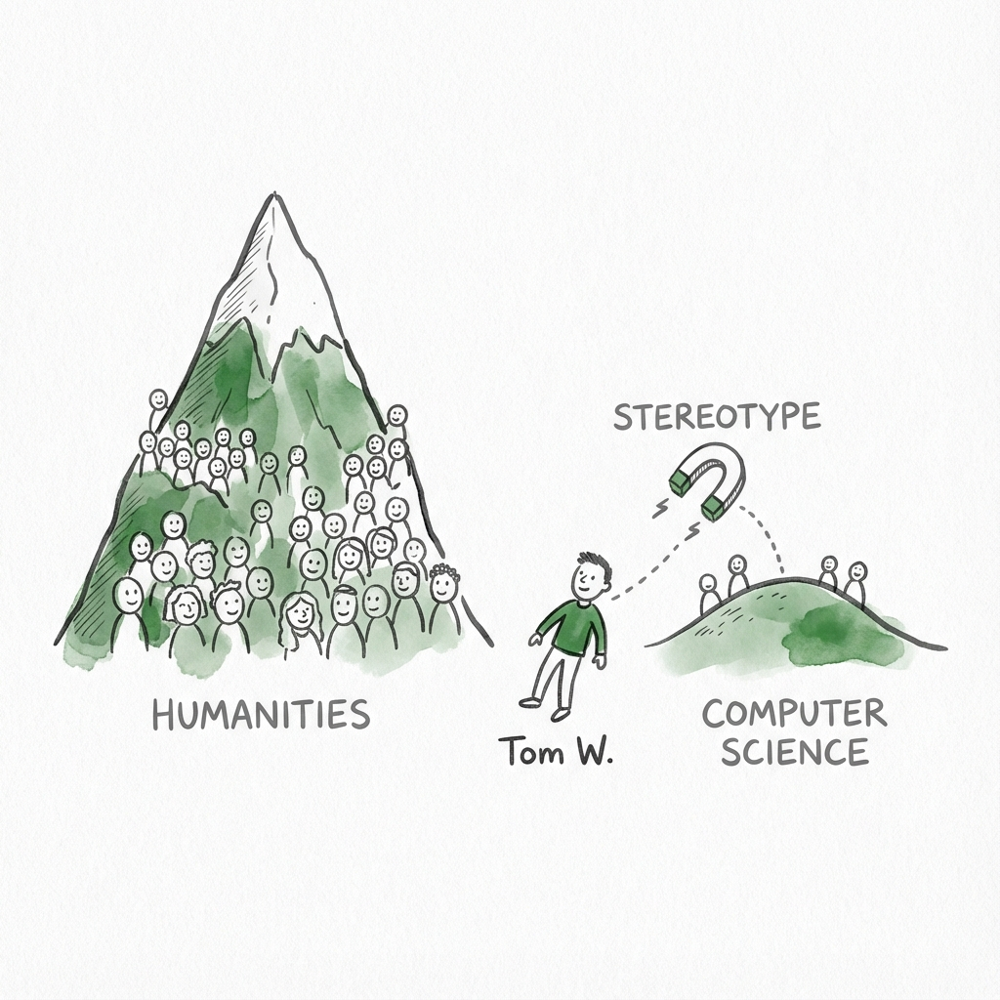
System 1 substitutes a hard question with an easy one. It asks how much he looks like the stereotype rather than determining the actual probability.
5. Regression to the Mean
Perhaps the most difficult concept for the human mind to grasp is Regression to the Mean.
Kahneman illustrates this with a story about a flight instructor who rejected the principle of positive reinforcement.
The instructor argued:
"On many occasions I have praised flight cadets for clean execution of some aerobatic maneuver, and in general when they try it again, they do worse. On the other hand, I have often screamed at cadets for bad execution, and in general they do better the next time. So please don't tell me that reinforcement works and punishment does not."
The instructor was observing a real pattern, but his interpretation was wrong.
Pilot performance fluctuates.
If a cadet executes a maneuver brilliantly (far above their average), they will likely perform closer to their average (worse) the next time, regardless of praise.
If they perform terribly (far below average), they will likely improve the next time, regardless of punishment.
The instructor attached a causal story (praise makes them lazy, screaming makes them better) to a mathematical inevitability.
We do this constantly.
We see a Sports Illustrated jinx when an athlete performs poorly after a cover appearance, not realizing that they made the cover because they had an outlier season, and are simply regressing to their normal performance level.
System 1 is a storyteller, not a statistician.
It sees causes where there is only chance.
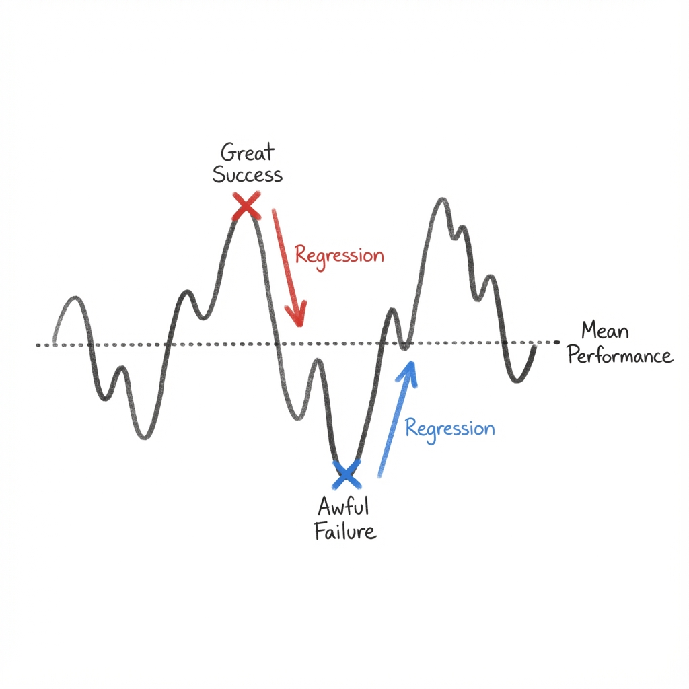
But the story doesn't stop at explaining the past.
System 1 also uses its stories to predict the future. And that's where things get dangerous.
Module 3: Overconfidence
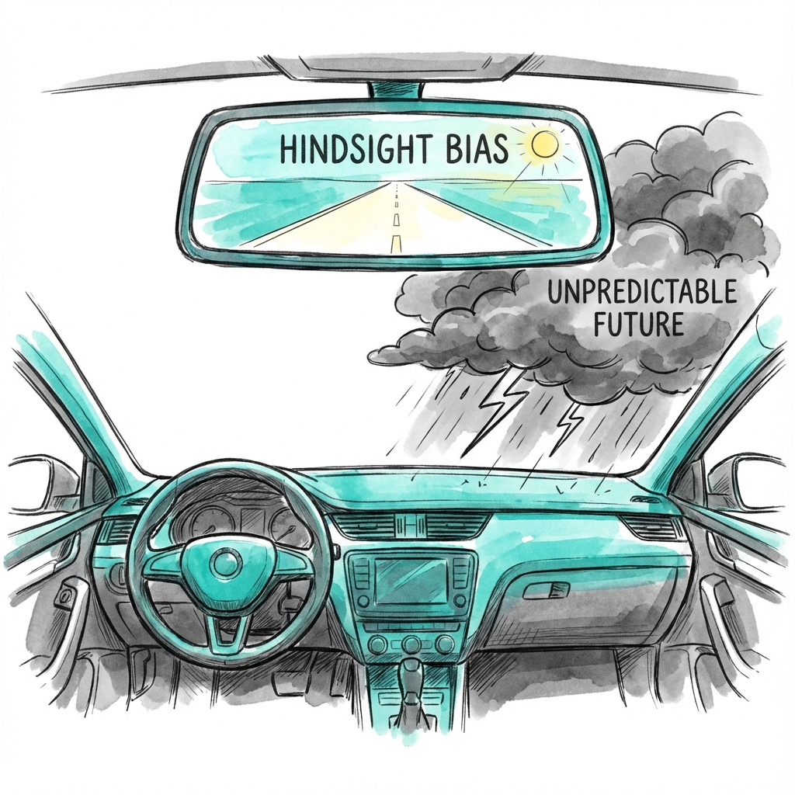
Because System 1 is so adept at finding causal links and creating coherent stories, it leaves us with a dangerous side effect.
A persistent sense that we understand the past and can therefore predict the future.
This sense of understanding is largely an illusion.
We are prone to believe that the world is more predictable than it actually is, a phenomenon often called the narrative fallacy.
We look at the history of a successful company like Google and see an inevitable march to the top. We identify key decisions and brilliant leadership, weaving them into a story where success was the only logical outcome.
In reality, the story of Google is riddled with luck and near-misses.
At one point, the founders tried to sell the company for less than a million dollars.
The buyer turned them down.
Our fast brain ignores the role of chance and focuses only on what happened, creating a story that makes the world feel orderly and safe.
1. The Backward-Looking Brain
This feeling of inevitability is fueled by hindsight bias.
Once an event has occurred, we find it nearly impossible to remember what we believed before that event. We knew it all along.
If a stock market crashes, we look back and see the warning signs as obvious, even though we didn't act on them at the time.
This bias is particularly cruel to decision-makers.
If a leader takes a calculated risk that fails, they are often criticized for making a stupid choice, even if the choice was the best one available given the information they had at the time.
Conversely, we praise people for gutsy moves that were actually reckless gambles that just happened to pay off.
We judge the quality of a decision by its outcome rather than by the process used to make it.
2. The Illusion of Validity
We also suffer from an illusion of validity.
The belief that our personal impressions are accurate even when they are consistently proven wrong.
Kahneman discovered this early in his career while evaluating candidates for the Israeli army. Despite statistical evidence showing that their leaderless group tests had zero predictive power for how a soldier would actually perform in officer training, the evaluators (including Kahneman) felt a surge of confidence every time they saw a candidate act like a leader.
This happens because System 1 creates a vivid, coherent image of a person or a situation, and System 2 is too lazy to challenge that image with statistics.
Even when we know the base rate for success is low, we believe our specific case is different.
We see this in the stock market, where professional traders spend their lives trying to beat the average, despite overwhelming evidence that, for most, their performance is no better than a coin toss.
3. Expert Intuition: When to Trust?
Not all intuition is an illusion.
There are experts, like firefighters or chess masters, who can look at a situation and know exactly what to do.
The question is: when can we trust that gut feeling?
Kahneman suggests two conditions must be met for expert intuition to be valid: 1. The environment must be sufficiently regular to be predictable. 2. The expert must have had a long period of practice with immediate feedback.
A firefighter develops valid intuition because a building on fire follows certain physical laws, and the firefighter sees the results of their actions instantly.
A stockbroker or a political pundit, however, operates in a low-validity environment where the rules are constantly changing and feedback is delayed or obscured by luck.
In these cases, their confidence is often a reflection of the coherence of the story they’ve told themselves, not actual knowledge.
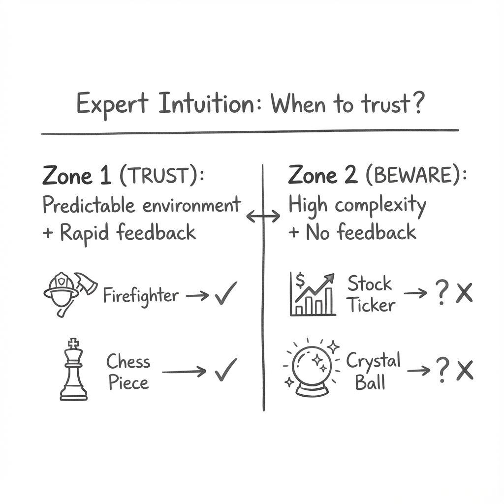
4. The Outside View
When we plan for the future, we tend to take the inside view.
We focus on our specific project, our unique skills, and the steps we need to take.
This almost always leads to the outside view being ignored, the statistical reality of how similar projects have gone for others.
However, when he asked for the outside view, he discovered the statistical reality. It took other teams seven years to finish similar books. Forty percent never finished at all.
Despite this data, his team chose to ignore the statistics and push forward with their two-year plan.
They eventually finished eight years later.
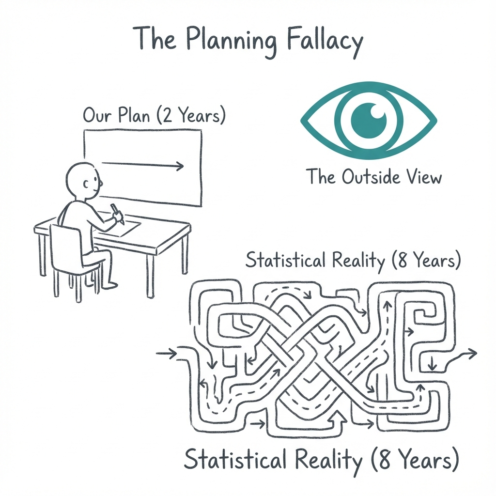
This planning fallacy is driven by an irrational optimism.
We underestimate the unknown unknowns. The illnesses, bureaucratic delays, and technical failures that are inevitable in any long-term project. By ignoring the outside view, we set ourselves up for disappointment.
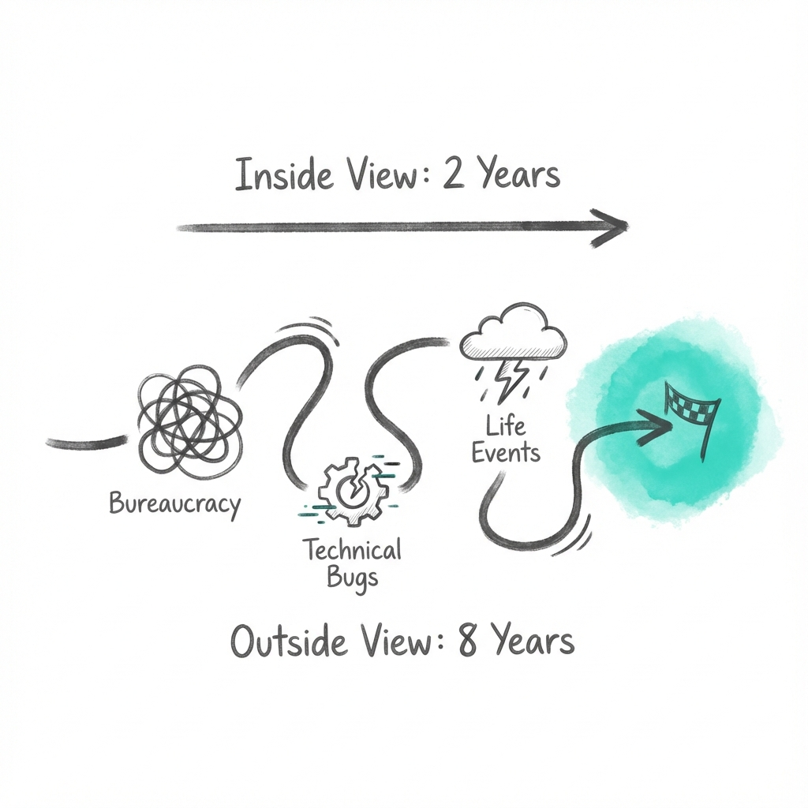
But overconfidence is only half the picture.
The other half is how we make choices, and how the framing of a choice can flip our decisions completely.
Module 4: Choices
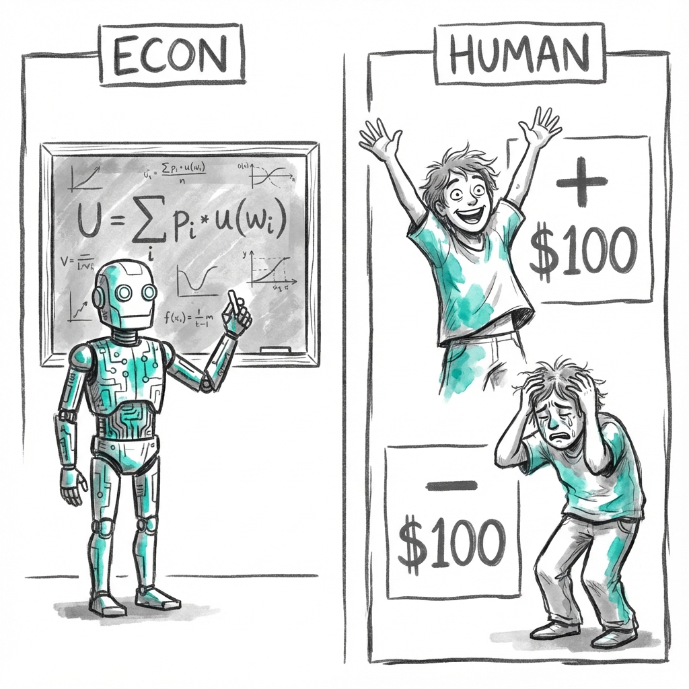
For centuries, the field of economics was built on a foundation of sand: the image of the Rational Agent.
Economists assumed that humans are Econs.
Mythical creatures who are perfectly logical, consistently selfish, and capable of making complex calculations to maximize their own utility.
These Econs don't care about the way a choice is framed.
They only care about the final state of their wealth.
Daniel Kahneman and Amos Tversky realized that real humans are nothing like Econs.
We don't think in terms of total wealth.
We think in terms of gains and losses relative to a starting point.
This realization led to the development of Prospect Theory, the work for which Kahneman eventually won the Nobel Prize.
1. The Problem with Bernoulli
Traditional economics relied on a theory proposed by Daniel Bernoulli in 1738.
Bernoulli argued that people make choices based on the utility of their wealth. In his view, the difference between having \$1 million and \$2 million is the same as the difference between having \$10 million and \$11 million.
But this theory misses a critical psychological truth.
Our reference point matters.
If you have \$5 million today and I tell you that tomorrow you will have \$2 million, you will be devastated.
If you have \$1 million today and I tell you that tomorrow you will have \$2 million, you will be ecstatic.
In Bernoulli’s model, both people end up with \$2 million, so they should be equally happy. In the real world, the change from the reference point is everything.
2. The Power of Loss Aversion
The most famous discovery of Prospect Theory is that losses loom larger than gains.
This is known as Loss Aversion.
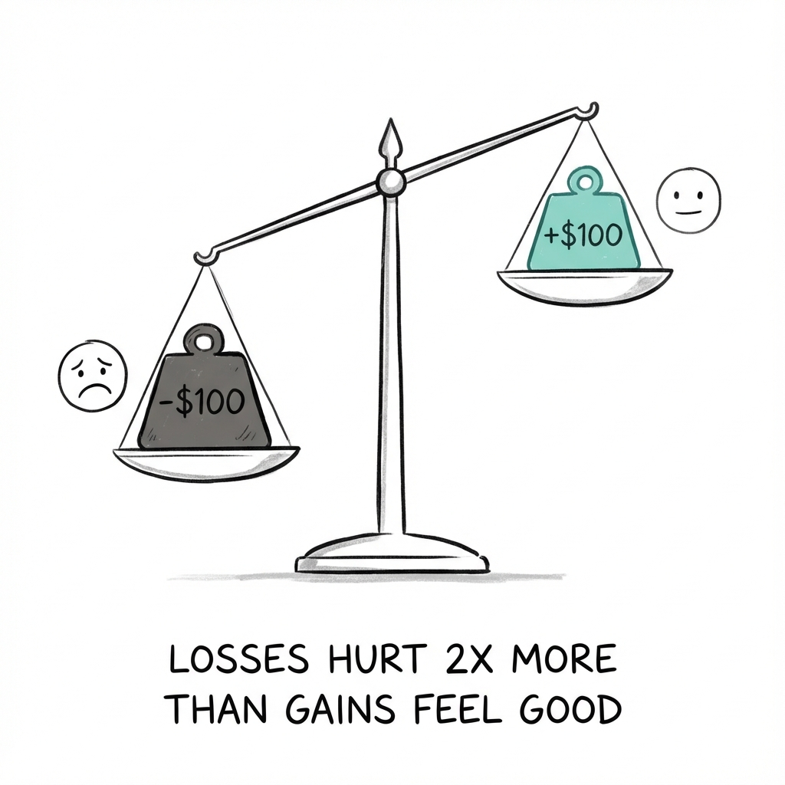
Imagine I offer you a coin toss.
If it shows heads, you lose \$100. If it shows tails, you win \$150.
Would you take the bet?
Most people say no.
For the average person, the pain of losing \$100 is roughly twice as intense as the joy of winning \$100. To make the bet attractive, the potential win usually needs to be around \$200.
This biological aversion to loss was likely an evolutionary advantage. An organism that treats threats as more urgent than opportunities has a better chance of surviving and reproducing.
But in the modern world, this makes us irrationally cautious.
We cling to a job that makes us miserable on Sunday nights.
We hold a stock that has fallen 50% because selling would mean admitting we were wrong.
The pain of realizing a loss feels worse than the potential benefit of moving on.
3. The Endowment Effect
Once you own something, it becomes part of your reference point.
It becomes much harder to give up.
This is the Endowment Effect.
In a famous experiment, researchers gave half a group of students coffee mugs and left the other half empty-handed.
They then set up a market for the mugs.
The students who didn't own a mug were willing to pay about \$2.87 to get one.
But the students who did own a mug refused to sell it for less than \$7.12.
The act of owning the mug changed its value.
For the sellers, giving up the mug felt like a loss.
For the buyers, acquiring the mug was merely a gain.
Because losses hurt more than gains feel good, the price gap was enormous.
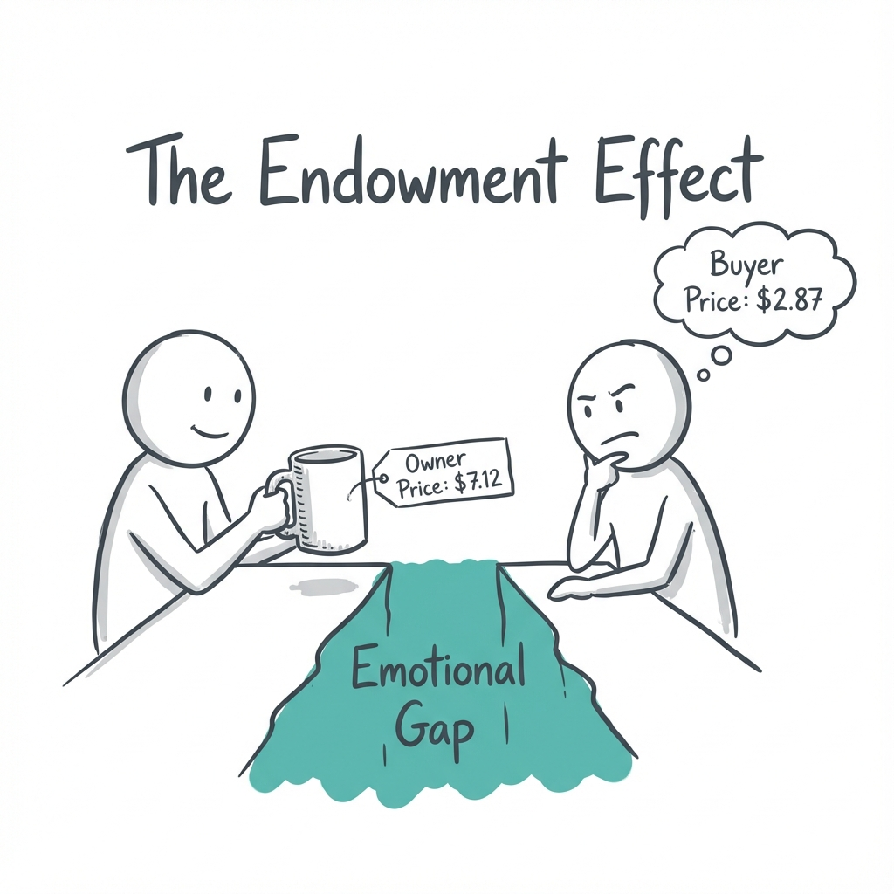
This explains why we find it so difficult to declutter our homes or sell a house for less than we paid for it.
We aren't just selling an object. We are enduring a loss.
4. The Fourfold Pattern
Kahneman identified a consistent pattern in how we react to different types of risks.
He calls it the Fourfold Pattern of preferences.
-
High Probability Gains: When you have a 95% chance to win \$10,000, you become risk-averse. You would rather take a sure \$9,400 than gamble for the full amount. This is why people accept low settlements in clear-cut legal cases.
-
Low Probability Gains: When you have a 5% chance to win \$10,000, you become risk-seeking. This is the logic of the lottery. You pay a premium for the hope of a large gain.
-
Low Probability Losses: When you have a 5% chance to lose \$10,000, you become risk-averse. This is the logic of insurance. You pay more than the statistical risk is worth just to eliminate the fear of a catastrophe.
-
High Probability Losses: This is the most dangerous quadrant. When you have a 95% chance to lose \$10,000, you become risk-seeking. You will take a desperate gamble to avoid a sure loss, even if the gamble makes the potential loss even worse.
This explains why people double down on failing businesses or losing wars. They are trying to escape the pain of a certain loss.
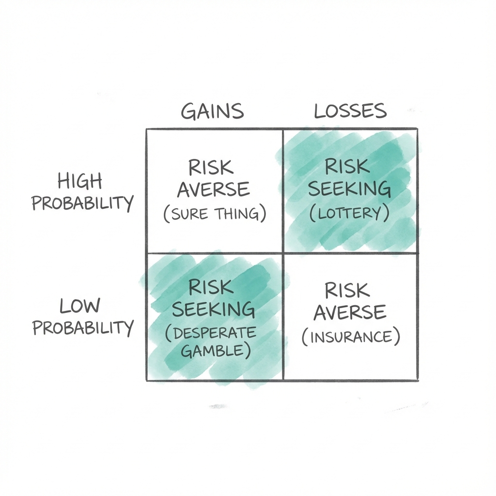
5. Framing and the Illusion of Choice
If the rational Econ model were true, your choices would be consistent regardless of how they are described.
But humans are susceptible to Framing.
Consider the Asian Disease problem.
Imagine a disease is expected to kill 600 people.
You must choose between two programs:
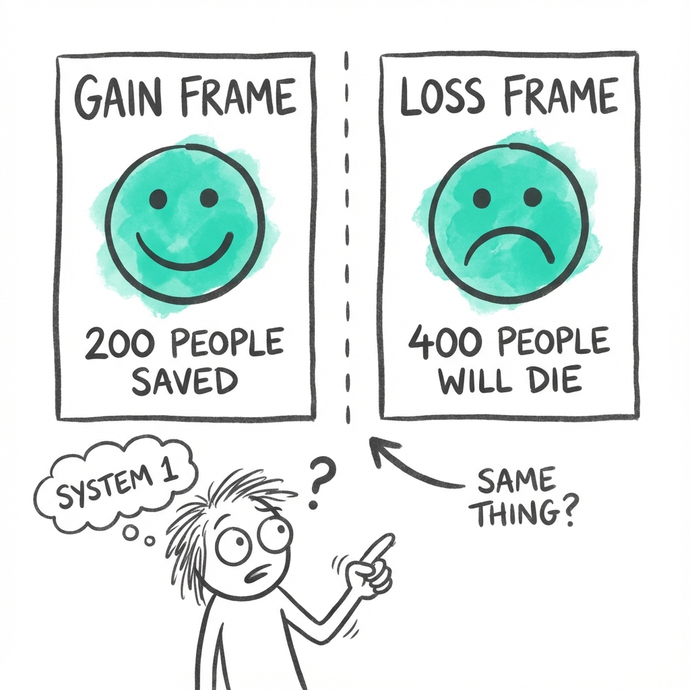
- Program A: 200 people will be saved.
- Program B: A 1/3 probability that 600 people will be saved, and a 2/3 probability that no people will be saved.
In this gain frame, most people choose Program A. They prefer the sure thing.
Now consider the same situation with a loss frame: * Program C: 400 people will die. * Program D: A 1/3 probability that nobody will die, and a 2/3 probability that 600 people will die.
In this frame, most people choose Program D. They become risk-seeking to avoid the sure death of 400 people.
Mathematically, Program A and Program C are identical. But because System 1 is emotional and reactive, the word "saved" triggers a different response than the word "die."
We don't choose between options. We choose between descriptions of options.
6. Keeping Score
Our choices are also influenced by mental accounting.
We tend to treat money differently depending on where it came from or what it is for.
For an Econ, \$50 is \$50.
But for a Human, \$50 found on the street feels like play money compared to \$50 earned from an hour of hard labor.
This mental bookkeeping leads to irrational behaviors.
For example, people will drive across town to save \$5 on a \$15 calculator, but they won't drive across town to save \$5 on a \$125 coat. The saving is the same, but the frame of the purchase makes it feel different.
We evaluate the saving relative to the price of the item rather than the value of our own time.
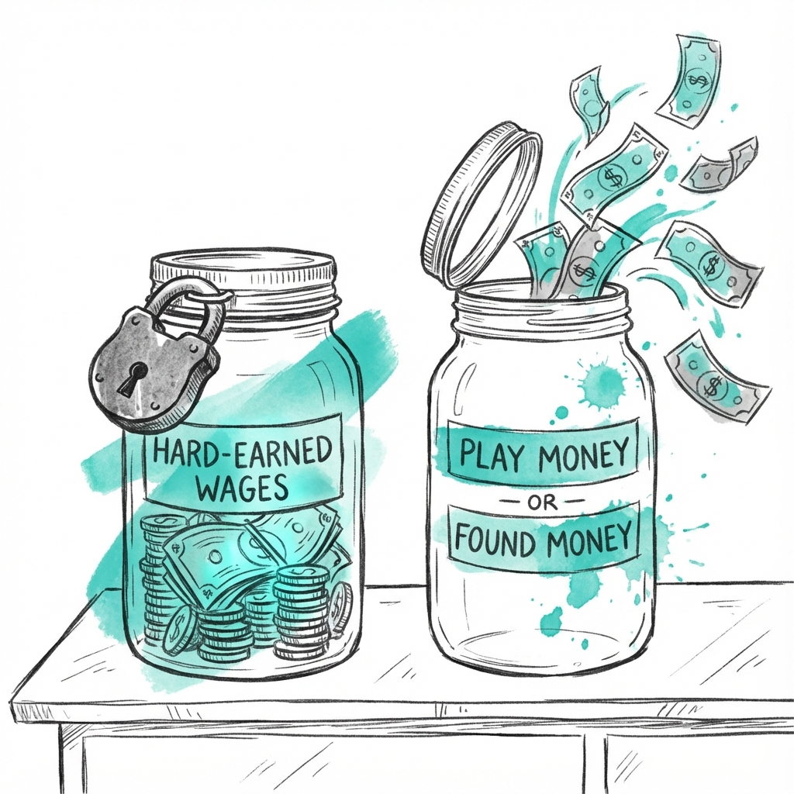
By breaking the myth of the rational agent, Kahneman showed that our choices are a product of a complex, often contradictory interaction between our fast and slow systems.
We are not calculating machines. We are emotional creatures navigating a world of gains and losses.
But there is one more twist.
It turns out that even the "you" making these choices isn't a single person. There are two of you. And they don't always agree.
Module 5: Two Selves
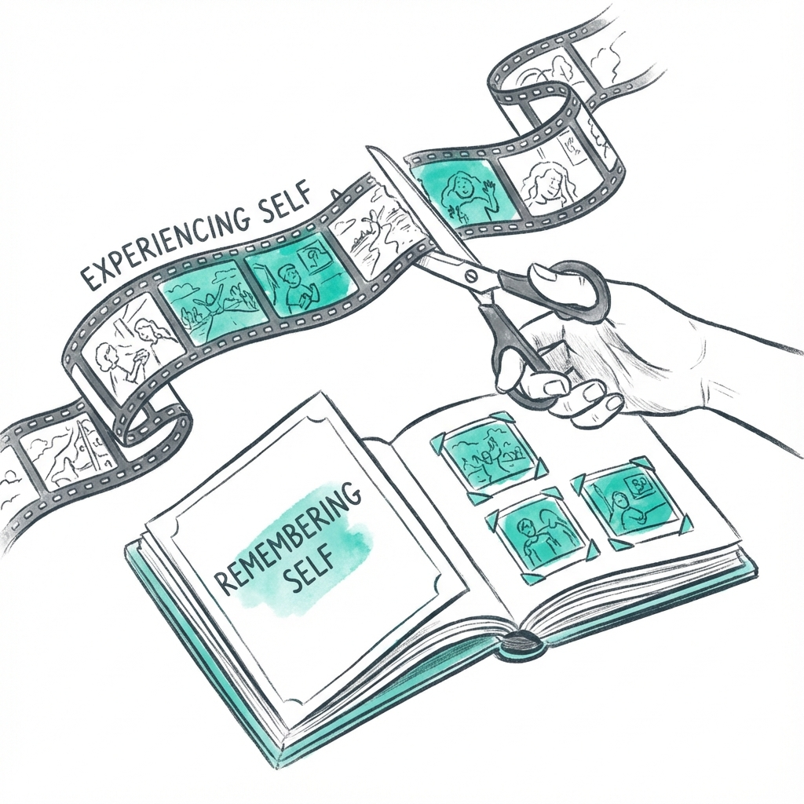
Most of us think of ourselves as a single, unified person.
But Kahneman argues that there are actually two selves living within each of us, and they often have conflicting interests.
There is the experiencing self, which lives in the present moment, and the remembering self, which keeps score and maintains the story of our lives.
The experiencing self is the one who feels the heat of the sun, the irritation of a traffic jam, or the pleasure of a first bite of cake. It answers the question, "How does it feel right now?"
The remembering self is the one that looks back and answers the question, "How was it on the whole?"
The problem is that the remembering self is the one that makes the decisions.
We do not choose between experiences. We choose between memories of experiences.
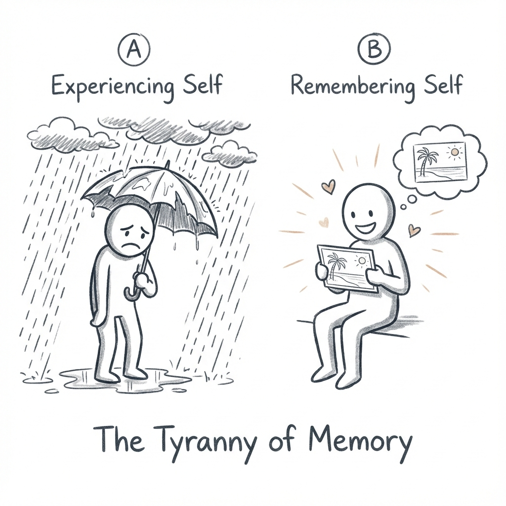
1. The Tyranny of the Memory
The remembering self is a poor historian.
It does not record a movie of our lives. It snaps a few postcards.
In particular, it is governed by two psychological rules that defy logic: duration neglect and the peak-end rule.
-
Duration neglect means that the length of an experience has almost no impact on how we remember it. Whether a vacation lasted seven days or fourteen days matters little to your memory of how good the vacation was.
-
The peak-end rule states that our global evaluation of an event is determined by the average of two points: the most intense moment (the peak) and the end.
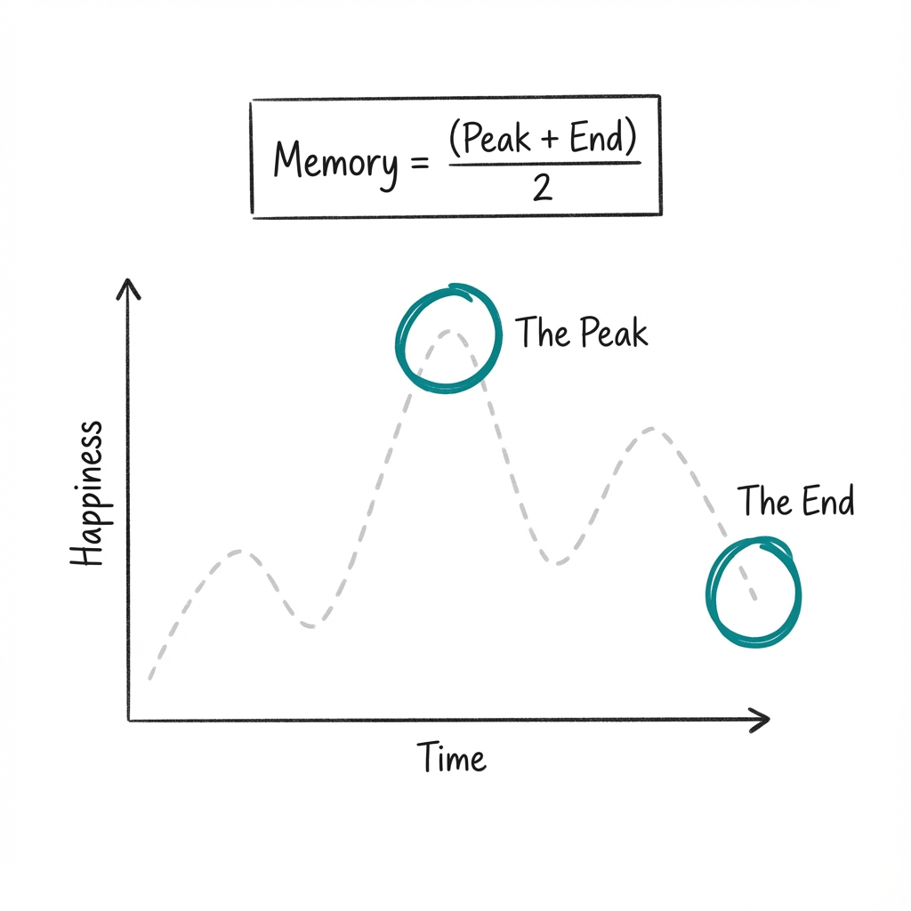
Kahneman demonstrated this with a cold pressor experiment.
Participants were asked to hold their hand in painfully cold water in two different trials.
In the first trial, they held their hand in 14°C water for 60 seconds.
In the second trial, they did the same 60 seconds, but then the water was warmed slightly to 15°C over an additional 30 seconds.
From the perspective of the experiencing self, the second trial was objectively worse. More pain. More time.
But when asked which trial they would prefer to repeat?
The majority chose the longer one.
Because the second trial ended better, the remembering self formed a more favorable impression. The extra 30 seconds of suffering didn't just go unnoticed. They actually improved the memory of the entire event.
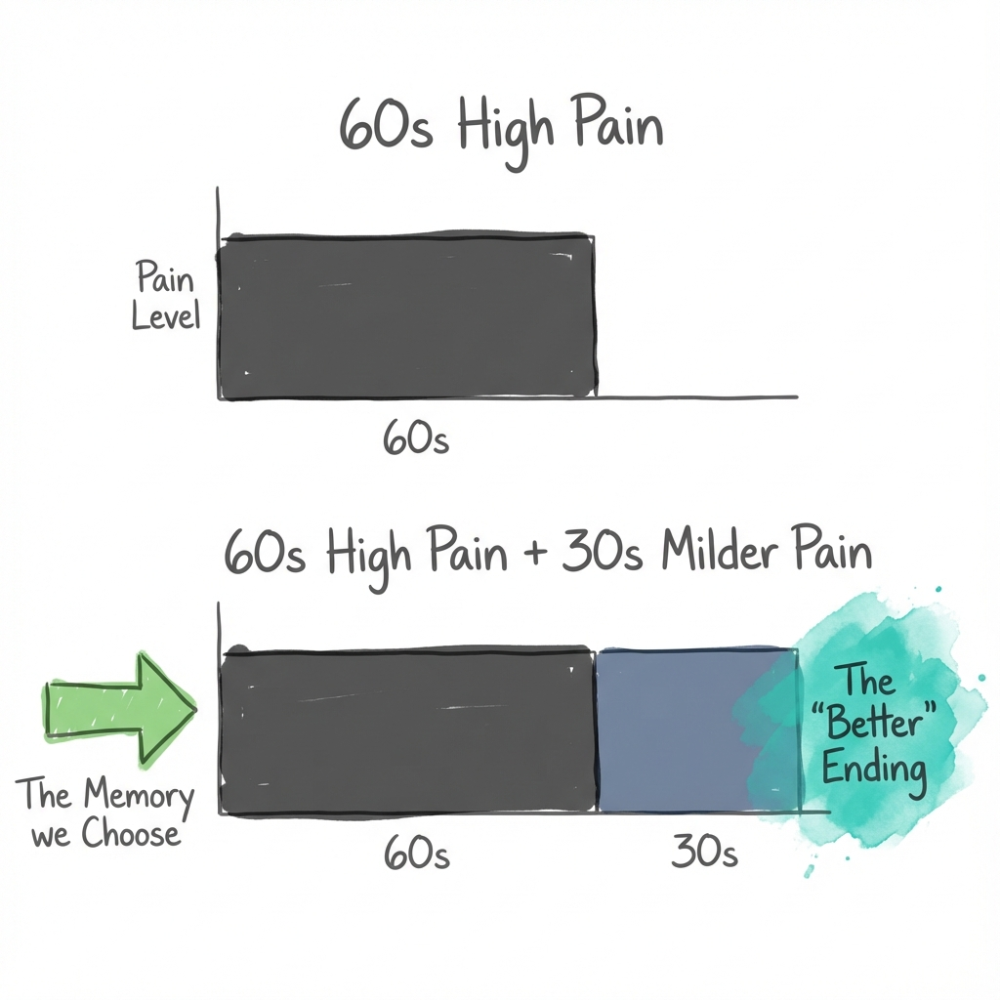
2. Life as a Story
This conflict between the two selves explains why we make choices that seem irrational.
We might endure a miserable, stressful job for years because it allows us to afford a perfect two-week vacation.
The experiencing self suffers for thousands of hours, while the remembering self is satisfied by a few high-quality postcards and a prestigious title.
Even our perception of a life well-lived is subject to these rules.
We are often more concerned with the ending of a story than its duration.
A life of sixty years filled with joy that ends in five years of suffering is remembered more harshly than a life of sixty years that ends on a high note, even if the total amount of happiness was greater in the first case.
We are, at our core, storytellers who prioritize the narrative over the lived reality.
3. The Measurement of Happiness
This distinction has profound implications for how we measure well-being.
If you ask people how happy they are, you are talking to their remembering self. They look back and evaluate their life satisfaction based on their achievements, their status, and their goals.
But if you track people’s actual moods throughout the day, you get a different picture of happiness.
A person might have a prestigious job that makes their remembering self proud, but their experiencing self might spend every day in a state of high stress and irritation.
Conversely, a person might have a low-status life that their remembering self finds disappointing, but they spend their days in pleasant social interaction and flow states that make their experiencing self happy.
Which self should we prioritize?
There is no easy answer.
A society that focuses only on life satisfaction (the remembering self) might ignore the daily suffering of its citizens.
A society that focuses only on momentary happiness (the experiencing self) might fail to encourage the long-term effort required for great human achievements.
The question isn't which self is right. The question is: which self should be in charge for this decision, right now?
Conclusion
Remember the gorilla?
You watched a video, counted passes, and missed a person in a fur suit thumping their chest in the middle of the court. When you saw the replay, you couldn't believe your own blindness.
That gorilla is everywhere.
- It's in the first number thrown out in a negotiation, silently dragging your counteroffer toward it.
- It's in the plane crash on the news, making you overestimate the risk of flying while ignoring the drive home.
- It's in the stock you refuse to sell at a loss, because admitting you were wrong hurts more than the money is worth.
You now know the names of these invisible forces: anchoring, availability, loss aversion, the planning fallacy.
You've met the two systems running your mind. The fast one that jumps to conclusions, and the slow one that's too lazy to check.
This knowledge won't make the biases disappear.
You will still feel the pull of the anchor and the sting of the loss. But you now have something you didn't have before. You can see the gorilla. And once you see it, you can't unsee it.
Every week, one book gets this treatment — fully structured, nothing skipped. Find them all at longform.online